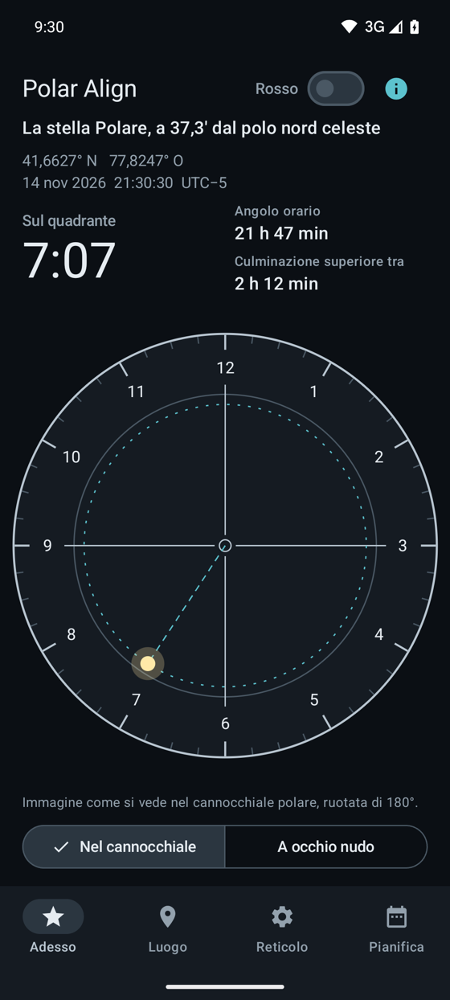
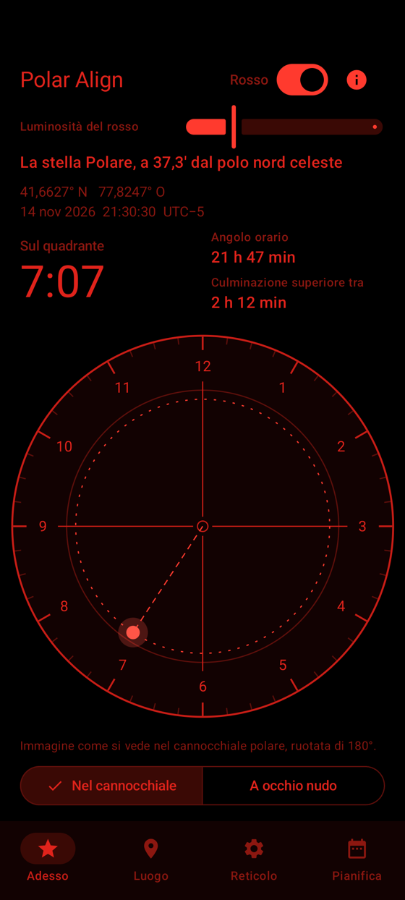
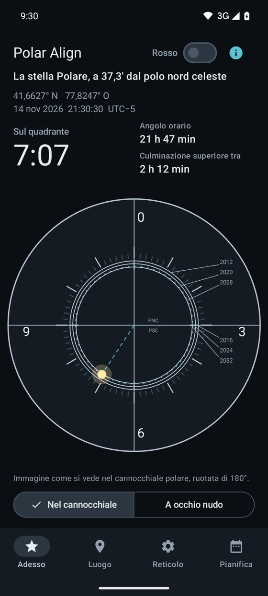
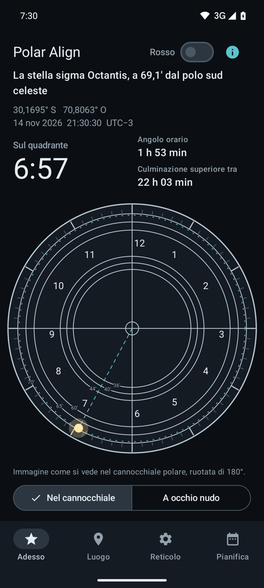
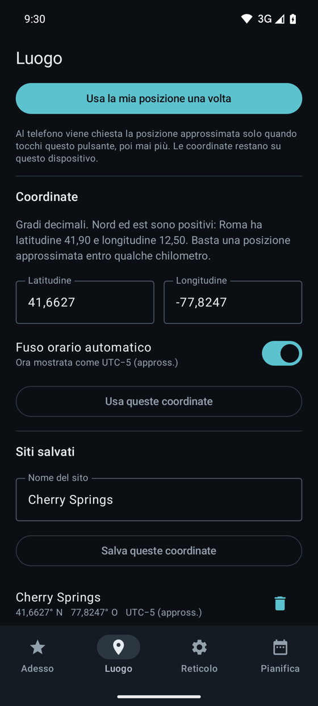

Polar Align mostra la posizione oraria per il tuo luogo e l’ora attuale. Porta la stella sul punto, blocca la montatura e inizia a fotografare.
Scarica su Google PlayAndroid. Funziona offline, senza pubblicità, senza account.


Le barre di sistema vengono nascoste, così sullo schermo non resta nulla di bianco mentre sei alla montatura.
Scrivi latitudine e longitudine, oppure tocca «Usa la mia posizione una volta». La posizione viene letta solo quando tocchi e non lascia mai il tuo telefono.
Passa dalla vista nel cannocchiale (ruotata di 180°) a quella a occhio nudo. Confronti solo immagine con immagine, senza dover ribaltare nulla nella testa.



Pro porta i reticoli Sky-Watcher, iOptron, Orion, Celestron, Explore Scientific EXOS-2, Vixen PF-L e Astro-Physics RAPAS, ripresi dai manuali dei produttori.
Le posizioni includono precessione, nutazione e aberrazione. Abbiamo confrontato l’angolo orario con la libreria astropy in entrambi gli emisferi. La rifrazione atmosferica non è considerata.
Il reticolo a quadrante con la posizione attuale della stella.
Acquisto una tantum.
Come funziona un reticolo e come leggere la posizione oraria, con le fonti (in inglese).
Inserisci latitudine e longitudine e vedi nel browser dove deve stare la Polare adesso (in inglese).